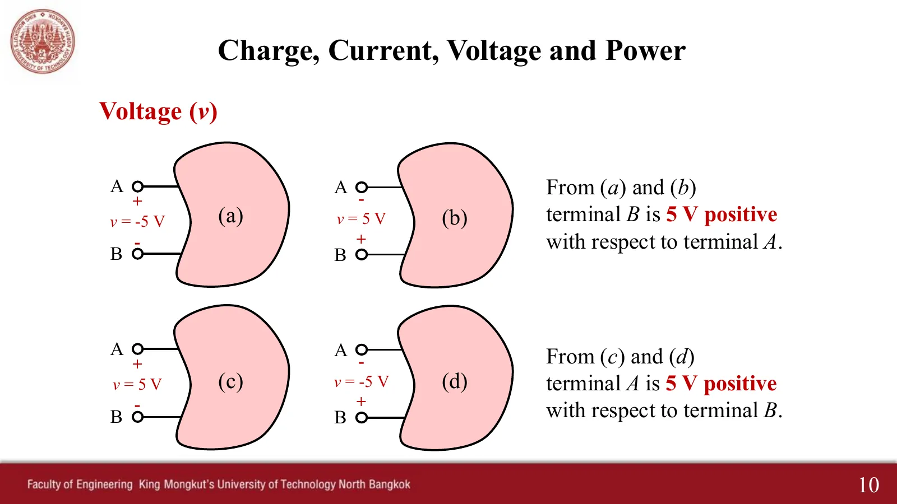

Voltage is the potential difference between the two terminals of an element: the work to move one coulomb through it (1 V = 1 J/C). So a voltage never lives at one point; you must always say what is measured against what. This page has 4 tools (A–D) and 3 problems, one after another, with slide pictures and solutions opened step by step.
Measure \(v_{AB}\) and \(v_{BC}\) and add them: you get exactly \(v_{AC}\), like two steps making the whole height (Kirchhoff's voltage law, chapter 3). Put both probes on the same wire and the meter reads 0 V.
ขั้วของแรงดัน (สไลด์หน้า 10)
Voltage polarity (slide p. 10)

สไลด์หน้า 10 · แตะรูปเพื่อขยายSlide p. 10 · tap to enlarge
1
สี่กรณีในสไลด์หน้า 10: ขั้วไหนสูงกว่า
The four cases of slide p. 10: which terminal is higher?
Slide p. 2 lists voltage sources, current sources and batteries. The three tools below take one kind each. Slide the load resistance \(R_L\) and watch the operating point on the graph. A common mistake is to think the voltage across a current source is zero.
B
แหล่งจ่ายแรงดันอุดมคติ 12 V
An ideal 12 V voltage source
แรงดันคงที่ 12 V ไม่ว่าโหลดจะเป็นเท่าไร กระแสขึ้นกับโหลด: \(I = 12/R_L\)
The voltage stays 12 V whatever the load; the current depends on the load: \(I = 12/R_L\)
Lower \(R_L\): the voltage stays 12 V but the current shoots up. Press "Short": the current would have to be infinite, which is impossible. So an ideal source does not really exist.
C
แบตเตอรี่จริง 12 V มีความต้านทานภายใน r = 1 Ω
A real 12 V battery with internal resistance r = 1 Ω
The terminal voltage sags when it delivers a large current: \(V = 12 - rI\)
เมื่อ \(R_L\) เล็ก แรงดันที่ขั้วตก เพราะแรงดันส่วนหนึ่งตกคร่อมความต้านทานภายใน (เหมือนไฟหรี่เมื่อเครื่องปรับอากาศเริ่มทำงาน) ลัดวงจรได้กระแสสูงสุด 12 A
With a small \(R_L\) the terminal voltage sags, because part of the voltage drops across the internal resistance (like lights dimming when an air conditioner starts). A short gives the largest current, 12 A.
D
แหล่งจ่ายกระแสอุดมคติ 2 A
An ideal 2 A current source
กระแสคงที่ 2 A ไม่ว่าโหลดจะเป็นเท่าไร แรงดันขึ้นกับโหลด: \(V = 2R_L\)
The current stays 2 A whatever the load; the voltage depends on the load: \(V = 2R_L\)
A diamond symbol is a source whose value depends on a voltage or current elsewhere in the circuit, used to model transistors and operational amplifiers (op-amps). You will need it in homework 1(c) and exercise 5 on page 2.4.
3
แหล่งจ่ายแรงดันควบคุมด้วยแรงดัน: หา \(v_L\)
A voltage-controlled voltage source: find \(v_L\)
Hayt Example 2.2 · ตัวอย่างประกอบ (ไม่อยู่ในสไลด์) · \(v_2 = 3\) V
Hayt Example 2.2 · an extra example (not in the slides) · \(v_2 = 3\) V
The voltage \(v_2\) in the left loop controls the \(5v_2\) voltage source in the right loop, although the two loops share no wire at all (the dashed purple line is the control, not a wire).
ลองทำดู 1 — แรงดันคือผลต่าง
เครื่องมือ A: วางโพรบแดงที่ A ดำที่ C แล้วกด "สลับโพรบ" ค่าเปลี่ยนเครื่องหมายเป็น \(v_{CA} = -v_{AC}\) ขนาดเท่าเดิม